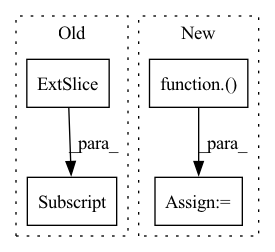

Pattern ID :6416

Before Change
h_offset = random.randint(0, max(0, nh - h - 1))
img_A = img_A[:, h_offset: h_offset + h, w_offset: w_offset + h]
img_B = img_B[:, h_offset: h_offset + h, w_offset: w_offset + h]
img_A = self.transform(img_A)
img_B = self.transform(img_B)
After Change
img_A = self.transform(img_A)
img_B = self.transform(img_B)
else:
img_A = transforms.ToTensor()(img_A)
img_B = transforms.ToTensor()(img_B)
img_A = self.transform(img_A)
img_B = self.transform(img_B)
return img_A, img_B
In pattern: SUPERPATTERN
Frequency: 3
Non-data size: 4
Instances
Fragment ID: 22328420
Project Name: euphoriayan/zi2zi-pytorch
Commit Name: d18cdce2416d812c3944db8aef913e06879b022b
Time: 2020-06-29
Author: ysq58000@foxmail.com
File Name: data/dataset.py
M Class Name: DatasetFromObj
N Class Name: DatasetFromObj
M Method Name: process(2)
N Method Name: process(2)
M Parent Class: data.Dataset
N Parent Class: data.Dataset
M File Name: data/dataset.py
N File Name: data/dataset.py
M Start Line: 53
M End Line: 76
N Start Line: 54
N End Line: 97
'>
Before Change
batch_size, num_of_vertices, in_channels, num_of_timesteps = x.shape
outputs = []
for time_step in range(num_of_timesteps):
outputs.append(torch.unsqueeze(self.cheb_conv(x[:,:,:,time_step], edge_index), -1))
spatial_gcn = F.relu(torch.cat(outputs, dim=-1)) // (b,N,F,T)
After Change
// cheb gcn
batch_size, num_of_vertices, in_channels, num_of_timesteps = x.shape
data = Data(edge_index=edge_index, edge_attr=None, num_nodes=num_nodes)
lambda_max = LaplacianLambdaMax()(data).lambda_max
outputs = []
for time_step in range(num_of_timesteps):
outputs.append(torch.unsqueeze(self.cheb_conv(x=x[:,:,:,time_step], edge_index=edge_index,
'>
Fragment ID: 22328421
Project Name: benedekrozemberczki/pytorch_geometric_temporal
Commit Name: b6e5117c2fc63a389880ceb887bb38a5580a7c68
Time: 2021-03-18
Author: He_YX@outlook.com
File Name: torch_geometric_temporal/nn/convolutional/mstgcn.py
M Class Name: MSTGCN_block
N Class Name: MSTGCN_block
M Method Name: forward(4)
N Method Name: forward(3)
M Parent Class: nn.Module
N Parent Class: nn.Module
M File Name: torch_geometric_temporal/nn/convolutional/mstgcn.py
N File Name: torch_geometric_temporal/nn/convolutional/mstgcn.py
M Start Line: 33
M End Line: 33
N Start Line: 18
N End Line: 35
'>
Before Change
// Scale input pixel values to 0 to 1
input_img = input_img / 255.0
input_img = input_img.transpose(2, 0, 1)
input_tensor = input_img[np.newaxis, :, :, :].astype(np.float32)
return input_tensor
After Change
from ultralytics.yolo.data.augment import LetterBox
def prepare_input(image, input_shape, stride, pt):
input_tensor = LetterBox(input_shape, auto=pt, stride=stride)(image=image)
input_tensor = input_tensor.transpose((2, 0, 1))[::-1] // HWC to CHW, BGR to RGB
input_tensor = np.ascontiguousarray(input_tensor).astype(np.float32) // contiguous
input_tensor /= 255.0 // 0 - 255 to 0.0 - 1.0
input_tensor = input_tensor[None].astype(np.float32)
return input_tensor
'>
Fragment ID: 22328423
Project Name: augmentedstartups/as-one
Commit Name: 37de4fbaee82f479c5ca8d53a2450c7083056ef1
Time: 2023-01-16
Author: umair.imran@axcelerate.ai
File Name: asone/detectors/yolov8/utils/yolov8_utils.py
M Class Name: AnonimousClass
N Class Name: AnonimousClass
M Method Name: prepare_input(4)
N Method Name: prepare_input(2)
M Parent Class:
N Parent Class:
M File Name: asone/detectors/yolov8/utils/yolov8_utils.py
N File Name: asone/detectors/yolov8/utils/yolov8_utils.py
M Start Line: 7
M End Line: 15
N Start Line: 7
N End Line: 12